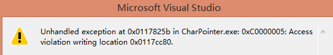
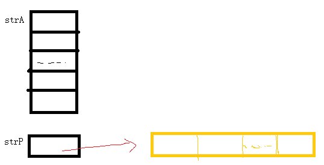

刚才在阅读以下内容时候复习了一下这两个概念. Quick case: Char Pointer vs Char Array in C++, by Bartlomiej Filipek
// Test case of char array vs char pointer.
//
#include <iostream>
int main()
{
char strA[] = "char array!";
char *strP = "char array?";
std::cout << "sizeof(strA): " << sizeof(strA) << ", of: " << strA << ", addr: " << &strA << std::endl;
std::cout << "sizeof(strA): " << sizeof(strA) << ", of: " << &strA[0] << ", addr: " << &strA << std::endl;
std::cout << "sizeof(strP): " << sizeof(strP) << ", of: " << strP << ", addr: " << &strP << std::endl;
std::cout << "sizeof(strP): " << sizeof(strP) << ", of: " << *strP << ", addr: " << &strP << std::endl;
strA[0] = 'C';
strP[0] = 'C';
return 1;
}
Visual Studio 2012, Debug输出为, 这是其中一个结果:
sizeof(strA): 12, of: char array!, addr: 009AFAC4
sizeof(strA): 12, of: char array!, addr: 009AFAC4
sizeof(strP): 4, of: char array?, addr: 009AFAB8
sizeof(strP): 4, of: c, addr: 009AFAB8
接着就是crash:

Crash的原因是strP指向的是一个ready-only memory, from C++ FAQ:
A string literal (the formal term for a double-quoted string in C source) can be used in two slightly different ways:
1) As the initializer for an array of char, as in the declaration of char a[] , it specifies the initial values of the characters in that array (and, if necessary, its size).
2) Anywhere else, it turns into an unnamed, static array of characters, and this unnamed array may be stored in read-only memory, and which therefore cannot necessarily be modified.
我觉得底下的memory可以简单理解为:

To read list:
reddit/cpp 上面有些cpp的信息.
What u should know about C++ 11, by Bartlomiej Filipek;
The C++14 Standard: What u Need to Know;
Smart pointers gotchas, by Bartlomiej Filipek;
book, Effective Modern C++, by Scott Meyers, 2014;
CppCon 2014 Speaker Materials ;
Multithreading for Visual Effects, book from Siggraph 2013 course note. Book Review from Dorian Fevrier's blog
之前有一本是Polygonal Mesh Processing, 也是源于siggraph course note.
讲多线程的, 让我想起了[book, C++ Concurrency in Action: Practical Multithreading, by Anthony Williams] 书的评价也是很高的.